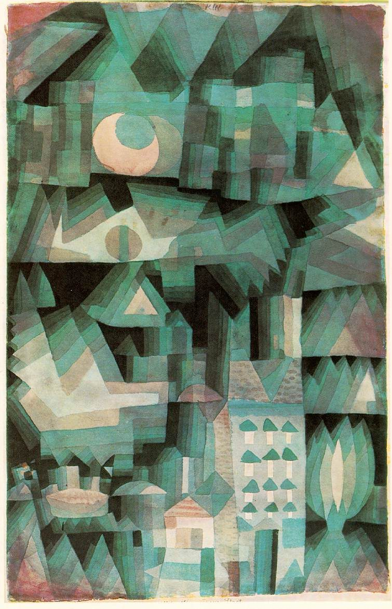
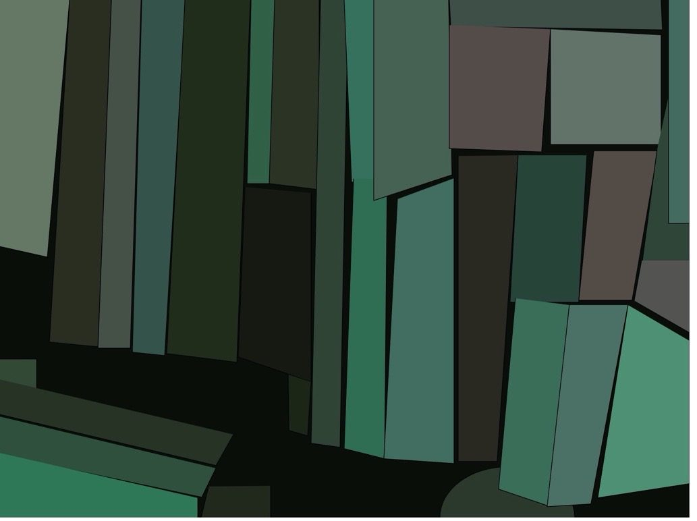

Programming for the Visual Arts
A p5.js class I took and the assignments I did as part of the coursework: UCLA Intro to Programming for the Visual Arts in p5.js.
The first assignment was to recreate a part of this painting,
Dream City by Paul Klee in 1921.

I chose a snippet of it and created this

For the second assignment, our task was to create an abstract greyscale pattern reflecting the structure of one of your favorite songs.
For this, I chose The Chainsmokers & Coldplay – Something Just Like This.